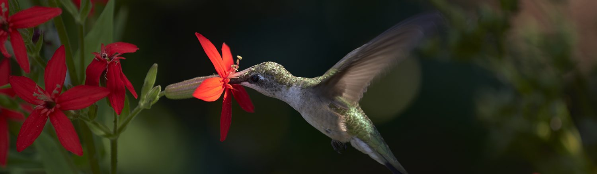

The Benefits of Growing Native Plants
Native plants have many benefits. They require much less watering, fertilizer, and pesticides. In fact, they can prevent water run-off and improve air quality. Native plants can help decrease pollution because they eliminate the need for mowers and other equipment.
Native plants are healthier and stronger. Plants native to an area are more likely to establish quickly and will naturally be hardy and healthy. Native plants have evolved over thousands of years, learning to thrive in particular areas—they grow in harmony with the environment, the soil, the water supply, the varying weather throughout all the seasons, and other native companions. Their root systems are deep, sometimes up to 15 feet, and acclimated to the soil, be it clay or sand, and average precipitation, whether it is high or low. Their stems and leaves can handle harsh sun or buffeting winds, for example, if that is the nature of the local environment. They are also part of a larger natural ecosystem
Native plants create wildlife habitat in your backyard. When native plants thrive in their original environment, they create a natural habitat for wildlife that is both beneficial to the environment and adds life to your outdoor space. We think of the obvious pollinators, like bees, birds, and butterflies, but these plants can also help create homes for small animals, warm and cold-blooded, and microscopic organisms in the soil. All these living things have jobs to do; the natural environment promotes a symbiotic relationship.
Native plants help the environment. Native plants also have other benefits. They require much less watering, fertilizer, and pesticides. In fact, they can prevent water run-off and improve air quality. Native plants can help decrease pollution because they eliminate the need for mowers and other equipment. Native plants have the ability to pull and store excess carbon.
Native plants are low maintenance. The long-term upkeep of native plants can be dramatically less costly than turf grass, as well as take less time. The EPA cites a study of larger properties that estimates that over a 20-year period, the cumulative cost of maintaining a prairie or a wetland totals $3,000 per acre versus $20,000 per acre for non-native turf grasses.
Native plants add splendor to your landscape. Your native garden can be a sculpted formal space designed with harmony, unity, and interest. Native plants provide a wealth of colors, textures, varying heights, and bloom times, resulting in a stunning display over multiple seasons.
